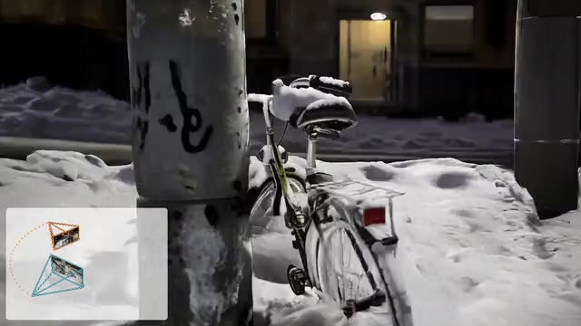
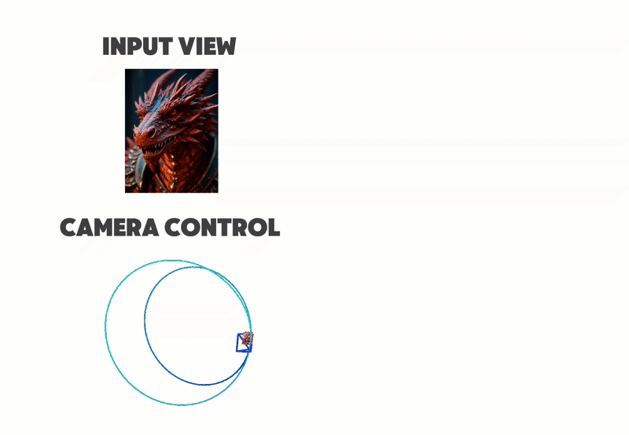
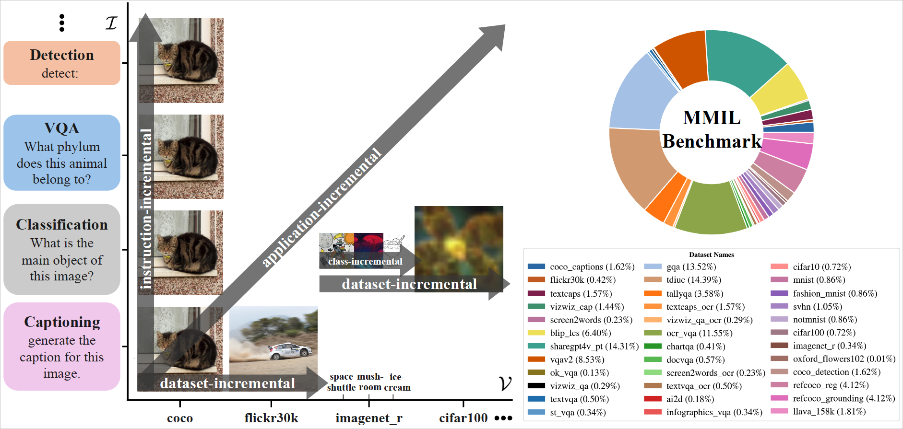
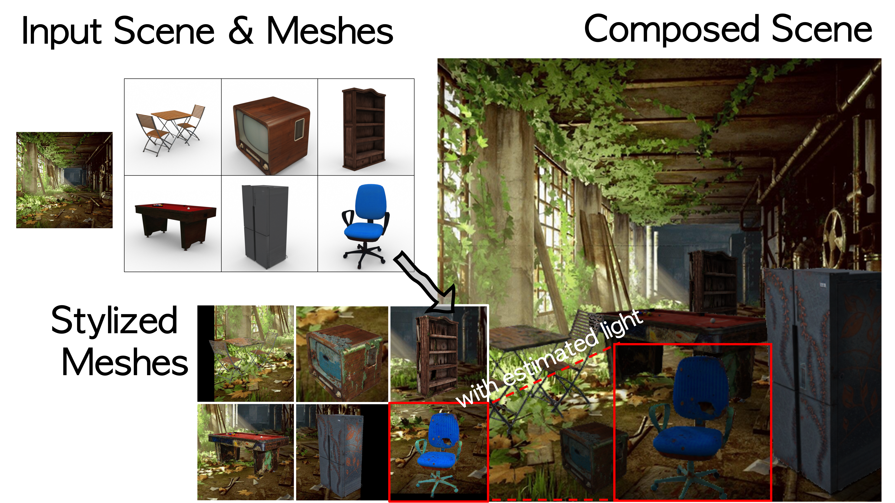
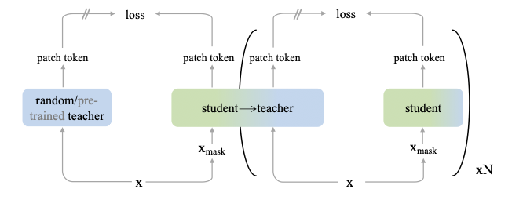
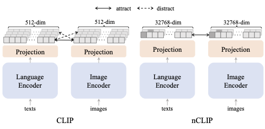
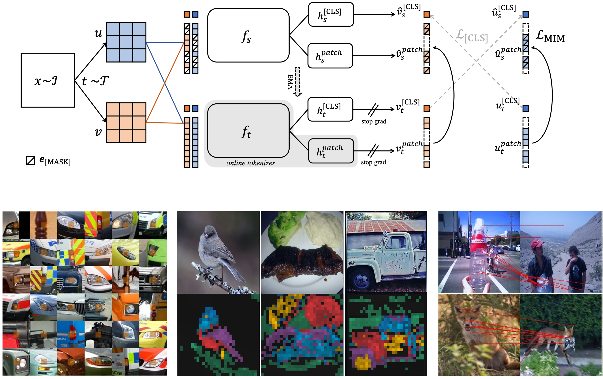
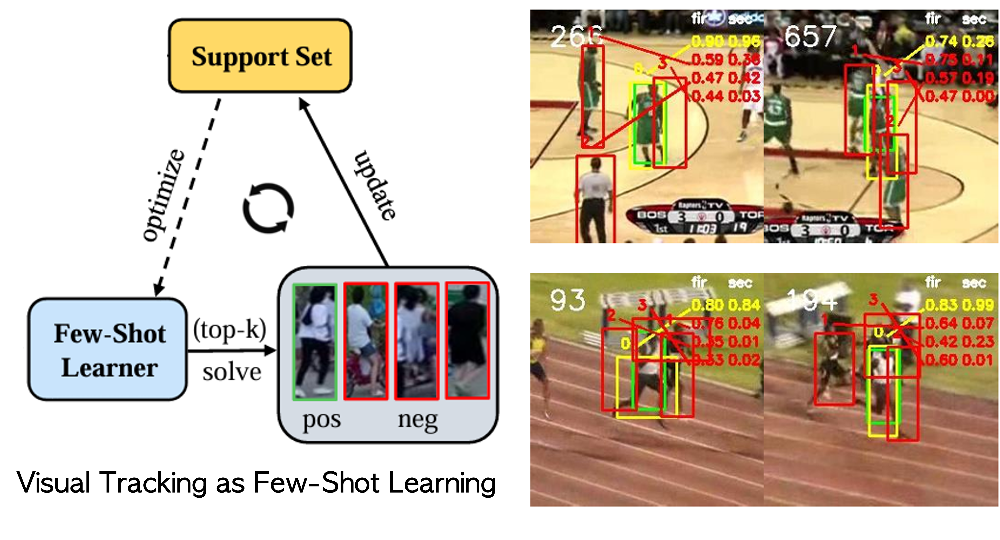
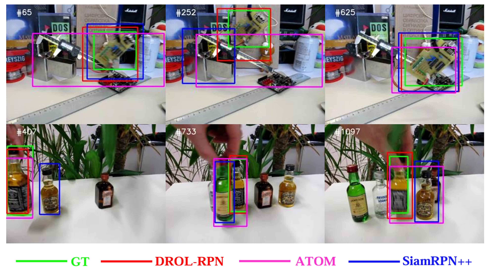

I am a final-year PhD at University of Oxford supervised by Prof. Christian Rupprecht and Prof. Philip Torr. I am a part of both the Visual Geometry Group as well as Torr Vision Group.
I like building multi-modal generative models and (self-)supervised generalist models. I find joy in telling stories—of my research, crafts, reflections, and becoming. If you’re curious to read a few, begin here.
News
Projects






iBOT: Image BERT Pre-Training with Online Tokenizer
Most Influential ICLR Papers in Google Scholar Metrics 2023
Improved and scaled up to the foundation model DINOv2 by Meta AI
Improved and scaled up to the foundation model DINOv2 by Meta AI


Experience
- Jul. 2025 - Oct. 2026
Meta AI
Researcher Scientist Intern
- Summer 2024
Stability AI
Researcher Scientist Intern
- Summer 2023
Google Research
Student Researcher
- Feb. 2022 - Aug. 2022
Microsoft Research
Research Assistant
- Mar. 2021 - Feb. 2022
ByteDance AI Lab
Research Intern
- Summer 2021
Johns Hopkins University
Summer Intern
- Apr. 2020 - Mar. 2021
SenseTime
Research Intern